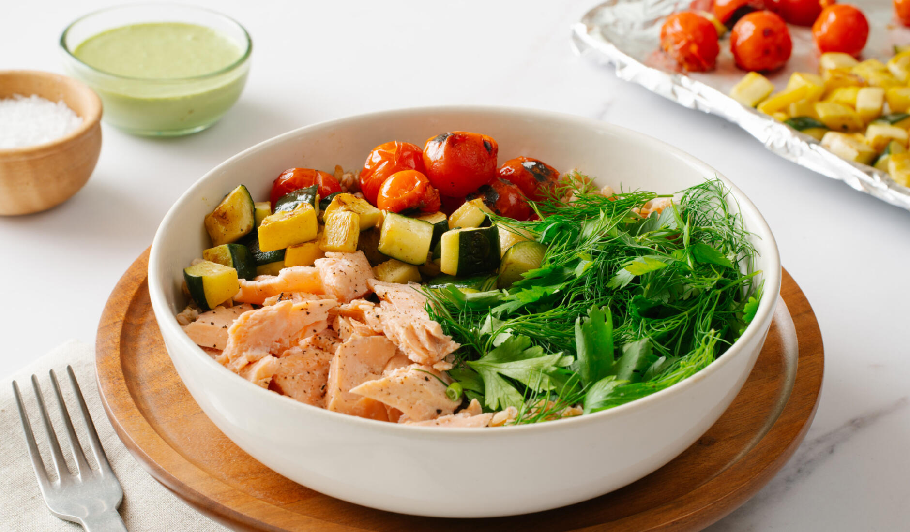
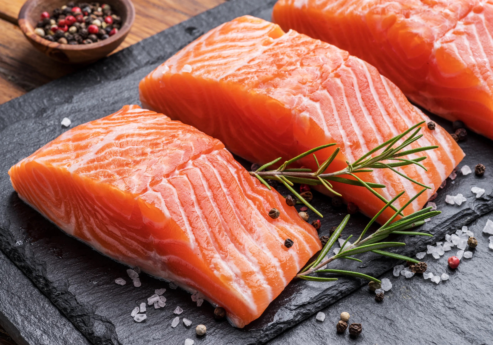

MAINS
₹450
Wild Salmon Power Bowl
CALORIES
540 kcal
PROTEIN
32g
CARBS
48g
FATS
18g
THE STORY
An editorial masterpiece for your palate. Our Wild-Caught Pacific Salmon is pan-seared to achieve a buttery, flaky texture, then placed atop a bed of tricolor organic quinoa.
Designed for the high-performance lifestyle, this bowl balances the richness of omega-3s
with the crunch of house-pickled radishes and the creaminess of ripe Hass avocado.
CORE INGREDIENTS
Wild Atlantic Salmon
Heirloom Quinoa
Hass Avocado
Baby Spinach
Lemon-Tahini Drizzle
Toasted Pepitas
.PNG) Farm-to-Table
Farm-to-Table
Locally sourced greens delivered daily from our partner collective.
.PNG) Chef's Signature
Chef's Signature
Prepared sous-vide for 45 minutes to ensure maximum nutrient density.
VISUAL DETAILS
